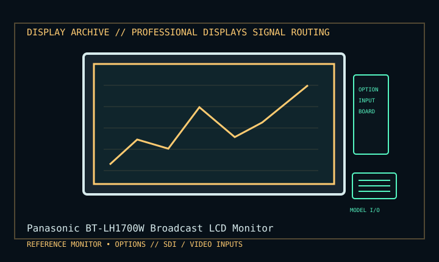

[ INDIVIDUAL COMPONENT // DISPLAY ARCHIVE ]
Panasonic BT-LH1700W Broadcast LCD Monitor
17.1-inch wide-format LCD production monitor for field and studio use.

IDENTIFICATION: Match the exact model suffix, region and installed option boards to the cited manual and rear label. Do not infer electrical compatibility from connector shape.
Model-specific specifications
| Catalog class | Professional Displays |
|---|---|
| Exact product | Panasonic BT-LH1700W Broadcast LCD Monitor |
| Era / purpose | 17.1-inch wide-format LCD production monitor for field and studio use. |
| Panel / image | 17.1-inch TFT LCD; 1280 × 768 native, 15:9; panel frame rate is distinct from accepted interlaced video standards. |
| Inputs | Dual HD/SD-SDI BNC, composite video, Y/C, shared YPbPr/RGB analog input; GPI/RS-232C control. Embedded audio support depends on installed option board. |
| Power | AC 100–240 V, 50/60 Hz; DC 12 V input (11–17 V stated range). AC current 1.1–0.6 A, DC 4.5 A per operating manual. |
| Mechanical | Approx. 430 × 323.5 × 198 mm with stand; about 8.1 kg. Rack mounting requires specified optional brackets. |
Revision, timing & host compatibility
Professional video monitor: supported standards and scan modes must be selected by signal, not inferred from its 1280 × 768 panel. Confirm the BT-LH1700W (not LH1710 or another suffix), SDI inputs and installed audio option. DC operation has a defined input range and polarity; use the manual-approved supply.
Before operation, compare source signal type, scan/frame timing, pinout, interface bandwidth, input-board configuration and mains/DC rating against the model-specific manual and nameplate. A listed maximum mode is not a promise of optimum image quality.
Vintage preservation & repair notes
Log installed option boards, firmware and calibration; retain rack ears/stand and connector caps. Check fan/vent path, SDI lock, panel uniformity, markers and GPI before field use. Use the manual’s cleaning and rack-safety procedure; avoid unsupported DC supplies.
Record serial/date code, configuration, all installed interface boards, accessories, image condition, calibration state, test source and document edition. Disconnect power before external cleaning and use only the manufacturer-approved procedure; do not open CRT/LCD/OLED equipment without qualified service practice.
Manufacturer manuals & specifications
- Panasonic BT-LH1700W Operating InstructionsManufacturer operating manual: specification table, signal support, AC/DC and installation.
- Panasonic BT-LH1700W Product InformationManufacturer product documentation and accessories.